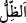
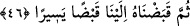
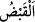

batışına kadar olan gölgedir. “
” ise zevâl vaktine kadar olan gölgedir.
Mânâ şöyledir: Dağ, binâ veya ağaç neyin gölgesi olursa olsun Rabbinin güneşin
doğuşunun başlangıcından itibaren gölgeyi nasıl uzatılmış olarak yarattığını görmedin
mi?
Bu ifâde, meydana gelen bütün işleri bizzat Allah Teâlâ’ya nisbet etmek, sıradan
sebepleri gerçek sebeb ve tesir olma mertebesinden tamamen çıkarmak ve sebepleri
sadece onların sonucu olarak meydana gelen şeylerin (müsebbebât) varlığına delâlet
etmeye hasr etmek sûretiyle Allah’ın kudretinin ve hikmetinin kemâlini açıklamaktadır.
“Eğer” Rabbin bu gölgenin hareketsiz kalmasını “dileseydi, onu elbet hareketsiz”
yâni uzunluk ve uzama bakımından bulunduğu hal üzere sâbit ve yerinde durur
“kılardı.”
Bu cümle, gölgenin uzamasının olağan sebeplerden kaynaklanmadığını, onda asıl
müessir olanın Allah’ın dilemesi ve kudreti olduğuna dikkat çekmek için zikredilmiştir.
“Sonra biz güneşi, ona delil kıldık.” Bu cümle ise gölgenin uzamasına atfedilmiştir
ve onun hükmüne dâhildir. Yâni biz güneşi, güneşin değişen durumlarını gözeterek
gölgenin durumunu belirlemede bir alâmet kıldık. Aslında güneş ve gölge arasında kesin
olarak bir sebep ve te’sir yoktur.
Bu cümlede “biz kıldık” şeklinde birinci çoğul ifâdesine geçilmesi, şu sebeptendir:
Zikredilen güneşin gölgeye delil kılınmasında herhangi bir tesir söz konusu değildir.
Halbuki güneş ile gölge arasında bir sebebiyet olduğunu haber veren sürekli dönme ve
hareket etme görülür. İşte bu Allah’ın kudretinin büyüklüğüne ve hikmetinin inceliğine
ziyâdesiyle delâlet etmek içindir. “Sonra” kelimesinin zikredilmesinin sırrı da budur.
46. Sonra onu (uzayan gölgeyi) yavaş yavaş kendimize çektik (kısalttık).
“Sonra” kelimesi zaman bakımından sonralığı ifâde etmek içindir. Yâni gölgeyi
yaratıp uzattıktan sonra onu sadece kudretimiz ve dilememizle güneş ışınlarını gölgenin
üzerine düşürmek sûretiyle yok ettik ve ortadan kaldırdık. Güneş ışınlarının bunda asla
hiç bir tesiri yoktur.
Âyette bu durumun yayılmış olan şeyi toplayıp dürmeyi anlatan “
” ile ifâde
edilmesi, daha önce gölgenin var edilmesinin “
(uzatmak)” diye ifâde
edilmesindendir.
Gölgenin ortaya çıkışı Allah tarafından olduğu gibi onun kabzedilip dönüşü de yine
Allah’tandır. Güneşin yükselişine bağlı olarak gölge yavaş yavaş kaybolur. Güneşin
yükselişi arttıkça gölgenin batı yönündeki eksikliği de artar. Şâyet Allah gölgeyi birden
çekip alsaydı gölgenin ve güneşin faydası olmazdı. Allah gölgeyi yavaş yavaş çekip
kısaltır ki güneş ve gölgenin faydaları ve onlarla ilgili maslahatlar gerçekleşsin.